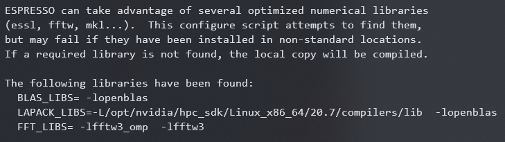

Compiling GPU-accelerated Quantum ESPRESSO in WSL2
Archived note from the earlier notes site; kept as written, not updated.
qe-compile
Table of content 1. qe-compile 2. 背景 3. 编译方法 1. Nvidia HPC SDK 和 cuda toolkit 的安装 2. 编译QE 1. QE6.7 2. QE6.8 3. QE7.0
背景
编译方法
Nvidia HPC SDK 和 cuda toolkit 的安装
首先，安装Nvidia HPC SDK：
# 安装基础编译链
sudo apt install build-essential
# 解压 Nvidida-HPC-SDK
tar -xvzf nvhpc_2020_207_Linux_x86_64_cuda_multi.tar.gz
cd nvhpc_2020_207_Linux_x86_64_cuda_multi/
# 安装
sudo ./install # 默认安装在/opt/nvidia/hpc_sdk，需要管理员权限
# Please choose install option:
enter 1 for Single system install
enter
# Note: directory /opt/nvidia/hpc_sdk was created.
# Installing NVIDIA HPC SDK version 20.7 into /opt/nvidia/hpc_sdk
# No selection/hitting enter will choose CUDA 11.0将HPC SDK的路径写入环境变量：
# Nvidia hpc sdk
NVARCH=`uname -s`_`uname -m`; export NVARCH
NVCOMPILERS=/opt/nvidia/hpc_sdk; export NVCOMPILERS
MANPATH=$MANPATH:$NVCOMPILERS/$NVARCH/20.7/compilers/man; export MANPATH
PATH=$NVCOMPILERS/$NVARCH/20.7/compilers/bin:$PATH; export PATH
export PATH=$NVCOMPILERS/$NVARCH/20.7/comm_libs/mpi/bin:$PATH
export MANPATH=$MANPATH:$NVCOMPILERS/$NVARCH/20.7/comm_libs/mpi/man
export LD_LIBRARY_PATH=/opt/nvidia/hpc_sdk/Linux_x86_64/20.7/compilers/lib
export LD_LIBRARY_PATH=/usr/lib/wsl/lib2/:$LD_LIBRARY_PATH
export LIBRARY_PATH=/usr/lib/wsl/lib2/:$LIBRARY_PATH
安装cuda toolkit：
# 安装cuda-toolkit
apt-key adv --fetch-keys http://developer.download.nvidia.cn/compute/cuda/repos/ubuntu2004/x86_64/7fa2af80.pub
sudo sh -c 'echo "deb http://developer.download.nvidia.cn/compute/cuda/repos/ubuntu2004/x86_64 /" > /etc/apt/sources.list.d/cuda.list'
sudo apt-get update
sudo apt-get install -y cuda-toolkit-11-0将cuda写入环境变量：
#cuda
export CUDA_HOME=/usr/local/cuda-11.0
export PATH=/usr/local/cuda-11.0/bin:$PATH
export LD_LIBRARY_PATH=/usr/local/cuda-11.0/lib64:$LD_LIBRARY_PATH
# wsl library
export LD_LIBRARY_PATH=/usr/lib/wsl/lib2/:$LD_LIBRARY_PATH
export LIBRARY_PATH=/usr/lib/wsl/lib2/:$LIBRARY_PATH
编译QE
QE6.7
更新windows11后重新编译6.7失败
# 下载gpu版本的QE6.7
wget https://gitlab.com/QEF/q-e-gpu/-/archive/qe-gpu-6.7/q-e-gpu-qe-gpu-6.7.tar.gz
# 解压
tar -xvzf q-e-gpu-qe-gpu-6.7.tar.gz
rm q-e-gpu-qe-gpu-6.7.tar.gz
# 编译
cd q-e-gpu-qe-gpu-6.7/
./configure --with-cuda=/opt/nvidia/hpc_sdk/Linux_x86_64/20.7/cuda/11.0 --with-cuda-cc=35 --with-cuda-runtime=11.0 --enable-openmp --with-scalapack=yes --enable-parallel FC=nvfortran F90=nvfortran F77=nvfortran CC=nvcc CXX=nvc++
export PATH=/opt/nvidia/hpc_sdk/Linux_x86_64/20.7/cuda/11.0/bin:$PATH
export LD_LIBRARY_PATH=/opt/nvidia/hpc_sdk/Linux_x86_64/20.7/cuda/11.0/lib64:$LD_LIBRARY_PATH
# 解决libcuda找不到的问题(错误：/usr/lib/wsl/lib/libcuda.so.1 is not a symbolic link)
sudo cp /usr/lib/wsl/lib /usr/lib/wsl/lib2
export LD_LIBRARY_PATH=/usr/lib/wsl/lib2/:$LD_LIBRARY_PATH
export LIBRARY_PATH=/usr/lib/wsl/lib2/:$LIBRARY_PATH
# https://zhuanlan.zhihu.com/p/283043907
QE6.8
Windows 11中编译顺畅
./configure --with-cuda=/opt/nvidia/hpc_sdk/Linux_x86_64/20.7/cuda/11.0 --with-cuda-cc=35 --with-cuda-runtime=11.0 --enable-openmp --with-scalapack=no --enable-parallel FC=nvfortran F90=nvfortran F77=nvfortran CC=nvcc CXX=nvc++ --enable-openacc
make pw -j 8
make cp -j 8
make pp -j 8
make hp -j 8QE7.0
QE7.0 的新特性
- GPU support for PWscf and CP significantly extended
- RMM-DIIS for CPU (S. Nisihara) and GPU (E. de Paoli, P. Delugas)
- DFT-D3: MPI parallelization and GPU acceleration with OpenACC
- projwfc.x can be used to compute the PDOS in a local basis (I. Timrov)
- Charge self-consistent DFT+DMFT calculations with the TRIQS software package
- via Wannier90 (S. Beck, CCQ Flatiron Institute)
# 下载源码包
wget https://github.com/QEF/q-e/releases/download/qe-7.0/qe-7.0-ReleasePack.tgz
# 解压
tar -xvzf qe-7.0-ReleasePack.tgz
cd qe-7.0/
# 链接库
./configure --with-cuda=/opt/nvidia/hpc_sdk/Linux_x86_64/20.7/cuda/11.0 --with-cuda-cc=35 --with-cuda-runtime=11.0 --with-scalapack=no --enable-openacc
# 编译
make pw
make pp -j
make cp -j编译中使用的库：
